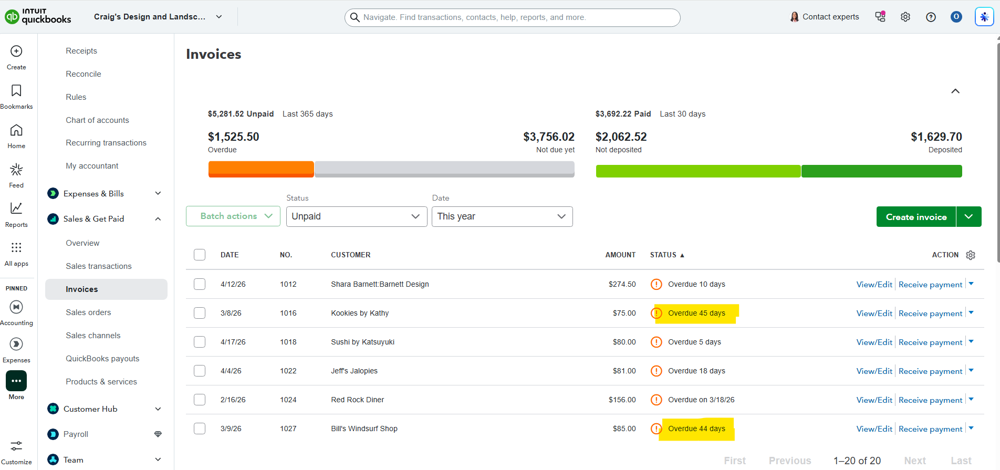

Purpose
Identify customers who still owe the company money and review overdue invoices for follow-up.
Simple Example
The invoice list shows $5,281.52 unpaid, including $1,525.50 overdue and several invoices overdue by 10, 45, 5, 18, and 44 days.
Simple Bookkeeping Decision Rule
Review overdue invoices first, then current unpaid invoices. Follow up based on due date, amount, and customer history.

Analysis
I reviewed the unpaid invoices screen. The screenshot shows $5,281.52 total unpaid, $1,525.50 overdue, and $3,756.02 not due yet. It also shows $3,692.22 paid in the last 30 days, $2,062.52 not deposited, and $1,629.70 deposited. Several invoices are overdue, including examples with 45 days, 44 days, 18 days, and 5 days overdue.
Result
The business should follow up on overdue invoices first, especially older unpaid balances. This helps improve cash flow and supports accounts receivable collection.